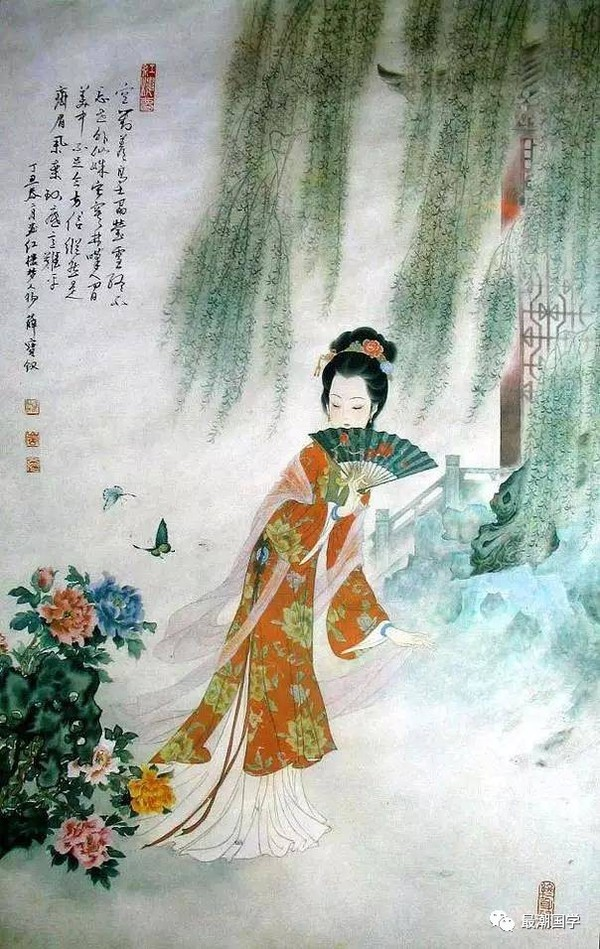

|
人物简介 薛宝钗，《红楼梦》中的女主角之一，与林黛玉并列为金陵十二钗正册之首、群芳之冠，贾宝玉的姨姊、妻子。她容貌丰美，举止娴雅，博学多才，通达了悟。父亲早亡，有母（薛姨妈）和一兄（薛蟠）。宝钗进京后与母亲薛姨妈、哥哥薛蟠暂住于贾府的梨香院，后迁居与东北上一处幽静的房所。 正册判词（钗黛合一） 可叹停机德，堪怜咏絮才。 人物外貌 “头上挽著漆黑油光的纂儿，蜜合色棉袄，玫瑰紫二色金银鼠比肩褂，葱黄绫棉裙，一色半新不旧，看去不觉奢华。唇不点而红，眉不画而翠，脸若银盆，眼如水杏。罕言寡语，人谓藏愚；安分随时，自云守拙。” 家庭出身 薛宝钗出生在金陵城，“贾、史、王、薛”四大家族之一，这薛家乃是紫薇舍人薛公之后，共八房分。在“护官符”上，薛家有“珍珠如土金如铁”的说法，形容其有百万家资，巨富无比。后薛夫去世，薛蟠赖祖父之旧情分，在户部挂名行商，领着内帑钱粮，采办杂料。 热毒冷香 宝钗生的病是“胎里带来的一股热毒”，又是世俗之“毒”。癞头和尚为宝钗开出了名曰“冷香丸”的药方来医治（抑制）她所谓的毒。冷香丸的配方中，春、夏、秋、冬四季合起来就是“炎凉”二字。蜂蜜、白糖味甘，黄柏性苦，合起来就是“甘苦”二字。 |
|